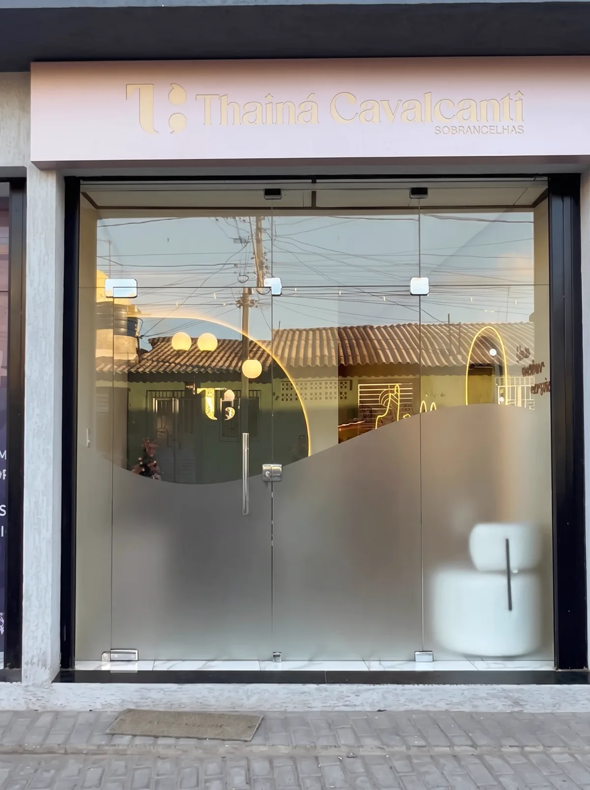
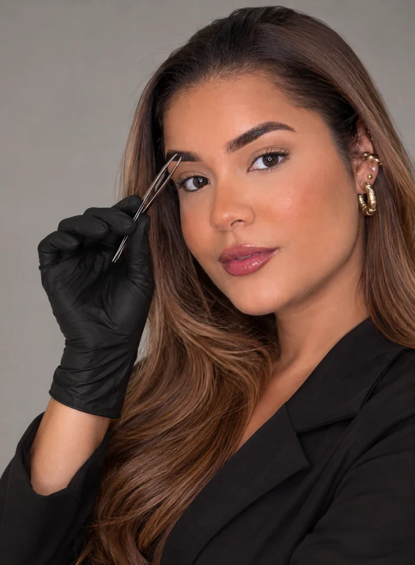
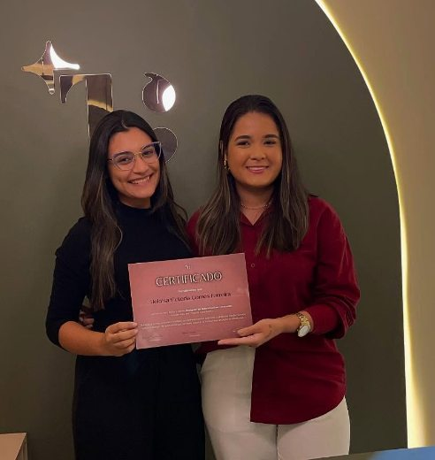
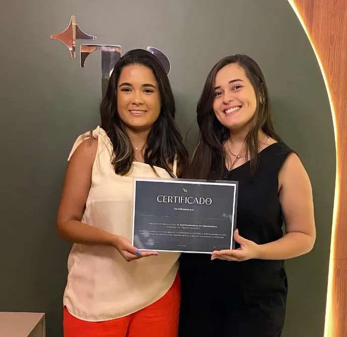
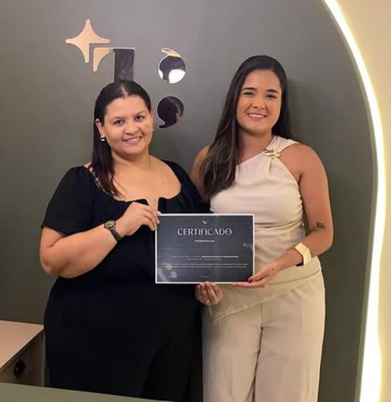
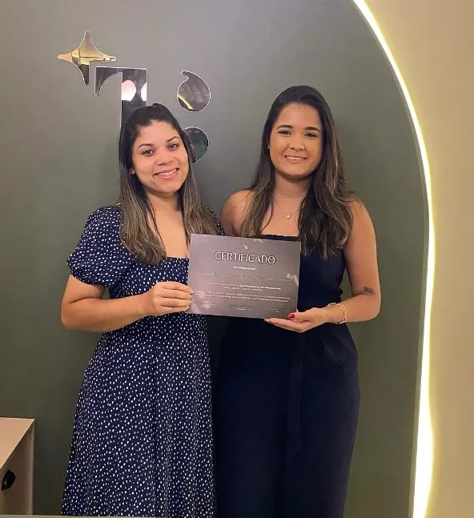
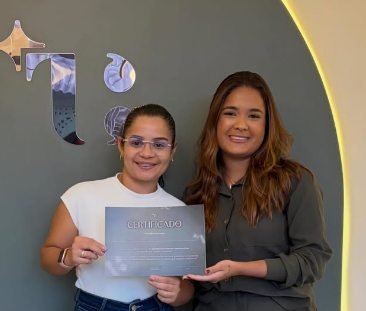

Conheça o studio
Meu studio fica em Carpina e é um espaço pensado só para sobrancelhas e olhar.
Aqui todo atendimento começa com uma avaliação honesta. Olho com calma o seu rosto, a sua expressão e a sua rotina antes de indicar qualquer técnica.
O studio também é sala de aula: é aqui que eu formo novas profissionais.
Thainá Cavalcanti


Micropigmentação
Você sabe como funciona a micropigmentação?
É a técnica que pigmenta a pele para desenhar a sobrancelha, pra você acordar com ela pronta por meses. No vídeo, eu explico.
R$ 670ou 10x de R$ 67
Agendar avaliação- 01
Avaliação
Olho seu rosto, sua expressão e sua rotina e digo se a micro faz sentido pra você.
- 02
Técnica
Fio a fio, natural, dura de 6 meses a 1 ano. Shadow, sombreado, de 8 a 18 meses.
- 03
Desenho
Feito pro formato do seu rosto, antes de pigmentar.
- 04
Retoque
Retoque e acompanhamento já inclusos, com os cuidados depois.
Nem toda sobrancelha precisa de micropigmentação.
E eu digo isso sendo micropigmentadora.
Clientes reais, antes e depois.
O que as clientes dizem
“Uma nova mulher.”
“Me sinto radiante, uma nova mulher. A praticidade de acordar pronta é maravilhosa.”
“Mãos de fada.”
“Mãos de fada. Zero dor ou incômodo. Minhas sobrancelhas elevaram minha autoestima.”
“Ganhei vários elogios.”
“Ganhei vários elogios hoje, dizendo que a sobrancelha tá linda.”
Ficou alguma dúvida?
Não achou a resposta? Me chama no WhatsApp.
Eu faço uma avaliação antes e indico só o que faz sentido pro seu rosto e pra sua rotina.
Design, henna, brow lamination e lash lifting não doem.
Você escolhe o serviço, o dia e o período logo no começo da página (ou me chama direto no WhatsApp) e eu confirmo o horário por lá. Chegue 10 minutinhos antes pra aproveitar com calma.
Aprenda com quem vive do design de sobrancelhas.
Curso presencial no Studio Thainá Cavalcanti, em Carpina-PE. Turmas pequenas, prática em modelo real e acompanhamento de perto até você atender com segurança.
“Eu sei, porque já estive do outro lado: com medo de começar, achando que não estava pronta. Hoje vivo da profissão que escolhi, e ensino o caminho que eu percorri.”
+50 alunas formadas no studio
O que você aprende
- Técnica com olhar profissionalDo desenho à finalização, entendendo o porquê de cada escolha.
- Prática de verdadeVocê observa e depois atende modelo real, dentro do studio.
- Correção de pertoEu corrijo o que for preciso, até você tomar decisões sozinha.
- Você sai preparadaCom apostila, certificado e confiança pra começar a atender.
Mais de 50 alunas, uma de cada vez, de perto.
Quero ser a próxima aluna







“Obrigada por tudo, pela paciência, calma e toda atenção. Obrigada por cada ensinamento e aprendizado. Esses 2 dias foram incríveis. És uma profissional maravilhosa.”
“Foi um prazer passar esse tempo com você aprendendo um pouco dos seus conhecimentos. É uma carreira que vou levar pra vida, e lá na frente você vai se orgulhar porque fui sua primeira aluna.”
Cursos Thainá
Ficou com dúvida sobre qual curso é pra você? Me chama e a gente conversa antes de você decidir.
Tirar dúvidas no WhatsApp- Turma pequena
- Poucas alunas por turma, pra eu corrigir cada uma de perto.
- Prática em modelo real
- Você não sai só com teoria. Sai tendo atendido.
Turma pequena · próxima: [DATA]
Design de Sobrancelhas
Pra quem está começando do zero e quer entrar na profissão com base sólida.
R$[VALOR]ou [X]x no cartão
Garantir minha vagaNo curso
- Teoria + visagismo
- Prática em modelo real
- Correção de perto
- [DURAÇÃO]
Você leva
- Kit de materiais
- Apostila
- Certificado
- Suporte pós-curso
Venha nos visitar
Studio Thainá CavalcantiRua Tiradentes, 110, Galeria Gomes Santos, sala 05, térreo
São Sebastião, Carpina-PE